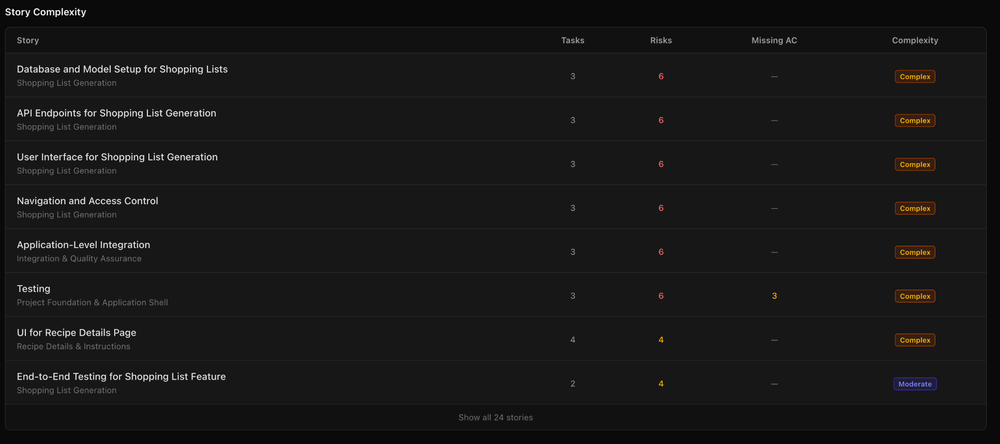
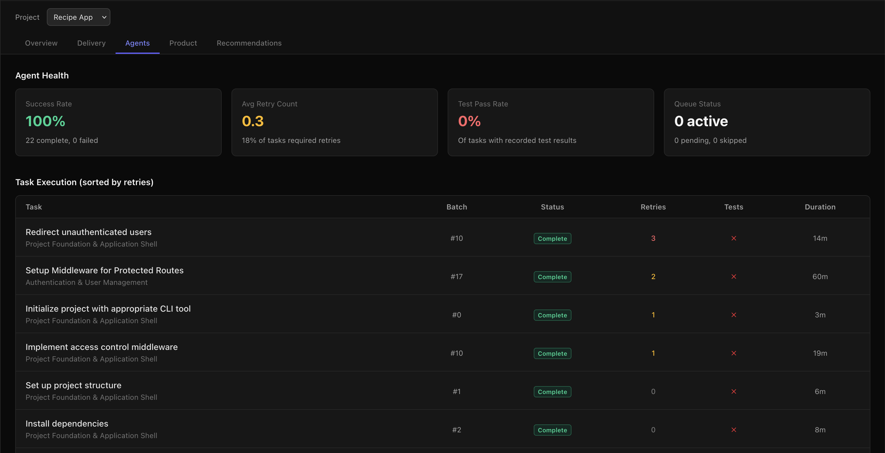
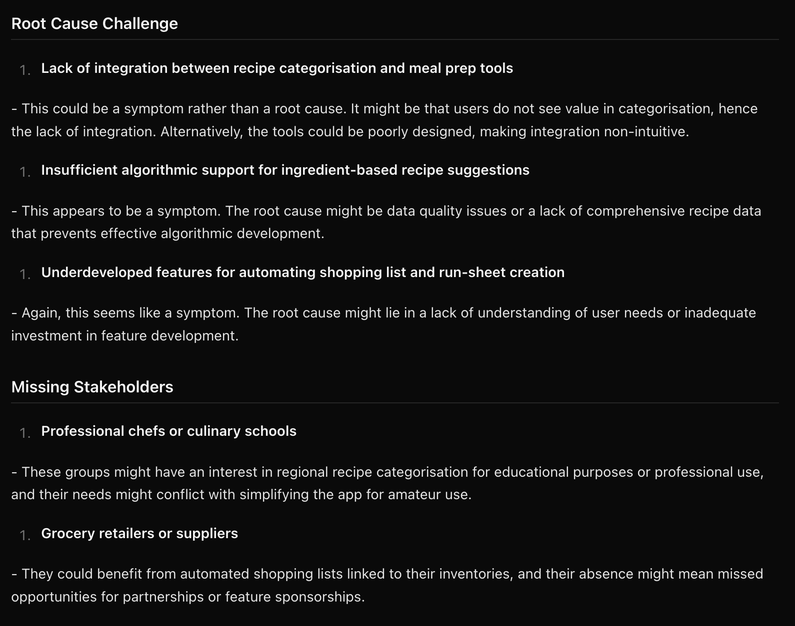

Stop Managing Chaos.
Start Shipping Structured Execution.
VixenWorks transforms vague product ideas into architecture-aware implementation systems with dependency-ordered AI execution workflows, so your developers and agents stop wasting time on ambiguity, rework, and disconnected context.
You already know how to build software. The problem is everything surrounding the build:
- unclear requirements
- weak tickets
- fragmented documentation
- architectural drift
- AI coding inconsistency
- delivery bottlenecks
- constant context switching
VixenWorks fixes the execution layer between product planning and implementation.

From vague product intent to architecture-aware execution systems.
AI Coding Tools Don't Solve Execution Chaos
Most AI tools generate code. That's not the hard part anymore.
- Poorly defined requirements
- Disconnected architecture decisions
- Shallow tickets with no implementation context
- Inconsistent agent outputs
- Zero orchestration between planning and execution
- Delivery delays
- Broken integrations
- Compounding technical debt
- Endless rework
- AI-generated garbage code
Without structured execution context, faster coding simply accelerates mistakes.
VixenWorks was designed to solve the layer most AI tools ignore: execution architecture and delivery orchestration.

From Product Idea to Structured Execution System
Most AI tools handle one stage in isolation. VixenWorks structures the entire delivery lifecycle so every stage feeds the next with context, not confusion.
Clarify intent before writing a single line
Use guided AI workflows to surface product intent, constraints, user problems, and business goals. No more teams building the wrong thing because requirements were never interrogated properly.
Generate structured requirements that hold up under scrutiny
Convert scattered product thinking into structured problem statements, validated execution requirements, and implementation constraints. Complexity and risk are surfaced before your team starts building.

Architecture-aware plans before a single file is touched
Create architecture documents, ADRs, dependency graphs, implementation phases, and technical documentation. Every downstream decision stays aligned to the architecture established here.

Dependency-ordered tasks your agents can actually execute
Convert architecture-aware plans into verbose, dependency-ordered execution tasks for developers or autonomous coding agents. Every task carries enough context to execute without a standup.

Govern delivery health across the entire project lifecycle
Track delivery progress, monitor execution health, manage approvals, and maintain architectural consistency. A live control panel shows every agent action, retry, test outcome, and completion across the full build.

Reduce Coordination Overhead Without Sacrificing Engineering Quality
Built for engineering leads who need execution leverage, not more management overhead.
Architecture-Aware Planning
Generate implementation systems that preserve architectural consistency from planning through execution, so drift is caught before it compounds.
Dependency-Ordered Task Generation
Create verbose implementation tasks with enough context for autonomous execution. No hand-holding required during implementation.
AI Agent Governance
Prevent agents from operating blindly. Structured workflows, approval gates, and execution boundaries keep autonomous coding within your architecture constraints.
Eliminate Documentation Fragmentation
Product definition, architecture, backlog, and implementation context stay connected inside one execution pipeline. No more context scattered across Notion, Jira, and Slack.
Delivery Visibility
Track backlog health, execution bottlenecks, blocked tasks, and throughput across projects. See risks before they cascade into sprint failures.
Lower Cognitive Load
Reduce context switching and management overhead so senior engineers focus on high-value technical decisions instead of chasing clarity on vague requirements.
Most Teams Operate Like This
Instead of rebuilding execution context every sprint, VixenWorks continuously maintains it throughout the entire delivery lifecycle.
Built For Teams Shipping Fast With AI
Every component in VixenWorks is designed to reduce execution ambiguity and increase delivery reliability across your entire engineering operation.
Architecture Documents + ADRs
Maintain technical consistency across developers and AI agents with structured, version-controlled decision records.
Dependency-Aware Execution Batches
Prevent implementation conflicts and broken sequencing by ordering every task against its real technical dependencies.
Autonomous Coding Agent Support
Queue execution-ready tasks directly into AI-assisted development workflows with structured context, not vague instructions.
Planner Chat
Amend architecture, plans, and implementation artefacts using conversational workflows without breaking downstream context.
Workspace Isolation
Separate products, teams, environments, and execution contexts safely without cross-contamination between projects.
Cost Tracking + Analytics
Monitor model usage, delivery throughput, execution health, and project risk signals from one dashboard.
Why Not Just Use Claude Code?
- Cannot resolve requirement ambiguity
- No architectural alignment across sessions
- No dependency orchestration between tasks
- No governance or approval workflows
- No implementation planning
- No delivery visibility or execution consistency
- Resolves ambiguity before implementation starts
- Architecture alignment from plan through delivery
- Dependency-ordered task orchestration
- Governance, approvals, and execution boundaries
- Structured implementation planning with context
- Full delivery visibility and execution consistency
VixenWorks structures the entire workflow surrounding the code generation process so both humans and AI agents can execute reliably at scale.

It's ambiguity, coordination overhead,
and execution fragmentation.
VixenWorks turns product delivery into a structured, architecture-aware execution system built for modern AI-native teams.
The teams building this discipline now will compound faster for years.
Built For The Next Generation of AI-Native Product Teams
VixenWorks is designed for teams that move fast, operate lean, ship frequently, and need AI-assisted execution without losing engineering discipline.
Whether you're a technical founder, fractional CTO, or engineering lead, VixenWorks gives your team structured leverage instead of adding more operational chaos.